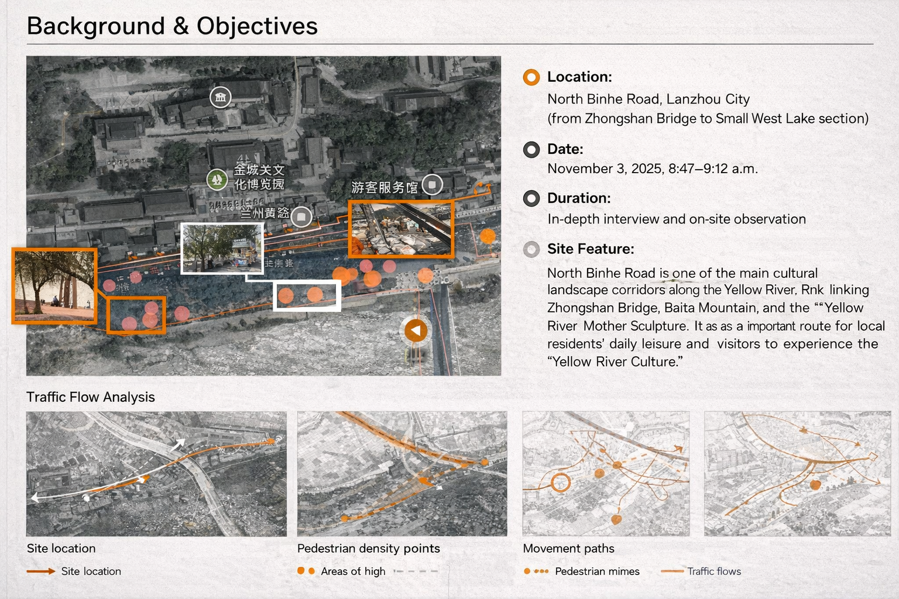
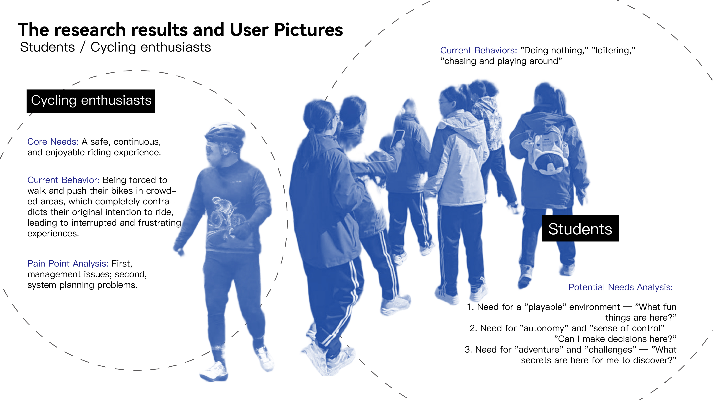
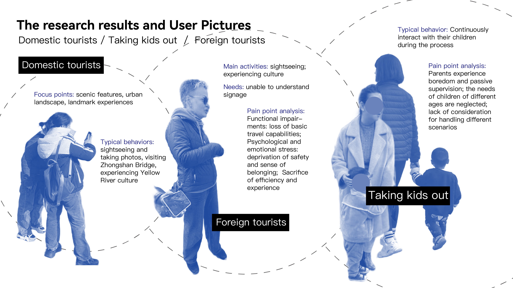
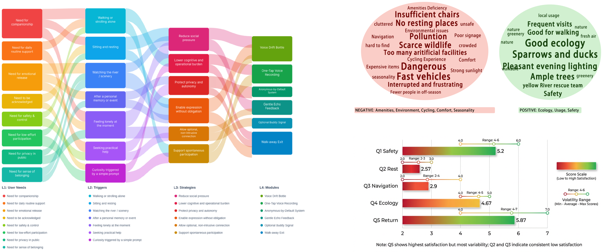
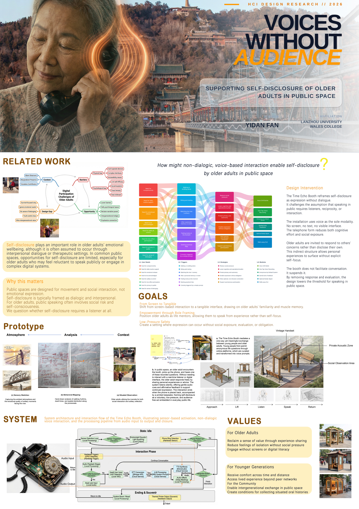

Self-Disclosure in Elderly Public Spaces: A Case Study Along the Yellow River

This project investigates the intersection of spatial narrative and elderly social behavior. Focusing on the public spaces along the Yellow River, we explore how XR technology can facilitate "self-disclosure" among elderly residents, transforming passive spaces into active storytelling environments.

Through extensive field research, we identified key social patterns and emotional nodes within the elderly community.



Figure: Analyzing the relationship between social interaction thresholds and digital intervention triggers.
Prototype Demonstration: The video below illustrates the XR narrative flow, showing how digital layers respond to user proximity and spatial orientation.
[ Place "交互prototype.mp4" Bilibili Embed Code Here ]

Keywords: Interaction Design, Aging Society, XR Storytelling, Public Space Research, Research through Design (RtD)